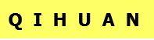

奇幻网站
CSDN博客
MYGIT

欢迎来到奇幻人生
我是玄锷无梦,擅长pythonweb开发, 热爱科技这里是我的个人学习经历和成果.与大家共享.
(鼠标滑到图片上有惊喜,点击有收获!)
博客项目体验
博客网站的开发项目,
具备基本的登录注册功能,
后台管理文章功能,发布修改删除文章
实现点赞,多级评论功能,多级评论采用自关联模型.
搜索所有文章标题和内容
显示文本采用markdown进行处理
采用python+django开发
nginx+gunicorn进行部署.
点击体验
博客教程
博客网站的开发项目,
具备基本的登录注册功能,
后台管理文章功能,发布修改删除文章
实现点赞,多级评论功能,多级评论采用自关联模型.
搜索所有文章标题和内容
显示文本采用markdown进行处理
采用python+django开发
点击学习
电子相册项目
具有 上传,查看图片
实现用户注册和登录.并验证.
flask,python3开发,pymysql操作原始sql语句
mysql存储数据,ajax异步请求.
登录测试账号体验: admin,密码:wangdengkai
点击体验
tcp服务器和简单框架
采用tcp多进程来搭建简单服务器
使用wsgi协议构建一个框架雏形
有助于学习理解tcp,服务器浏览器的原理.
点击学习
简单的桌面搜索工具
一个简单的桌面搜索系统，从百度获取数据,
tkinter搭建页面,request发送请求
beautifulsoup解析页面
对于深入学习面向对象,了解爬虫很有帮助.
点击学习